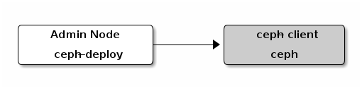

Notice
This document is for a development version of Ceph.
Block Device Quick Start
Ensure your Ceph Storage Cluster is in an active + clean state
before working with the Ceph Block Device.

You may use a virtual machine for your ceph-client node, but do not
execute the following procedures on the same physical node as your Ceph
Storage Cluster nodes (unless you use a VM). See FAQ for details.
Create a Block Device Pool
On the admin node, use the
cephtool to create a pool (we recommend the name ‘rbd’).On the admin node, use the
rbdtool to initialize the pool for use by RBD:rbd pool init <pool-name>
Configure a Block Device
On the
ceph-clientnode, create a block device image.rbd create foo --size 4096 --image-feature layering [-m {mon-IP}] [-k /path/to/ceph.client.admin.keyring] [-p {pool-name}]
On the
ceph-clientnode, map the image to a block device.sudo rbd map foo --name client.admin [-m {mon-IP}] [-k /path/to/ceph.client.admin.keyring] [-p {pool-name}]
Use the block device by creating a file system on the
ceph-clientnode.sudo mkfs.ext4 -m0 /dev/rbd/{pool-name}/foo This may take a few moments.
Mount the file system on the
ceph-clientnode.sudo mkdir /mnt/ceph-block-device sudo mount /dev/rbd/{pool-name}/foo /mnt/ceph-block-device cd /mnt/ceph-block-device
Optionally configure the block device to be automatically mapped and mounted at boot (and unmounted/unmapped at shutdown) - see the rbdmap manpage.
See block devices for additional details.
Brought to you by the Ceph Foundation
The Ceph Documentation is a community resource funded and hosted by the non-profit Ceph Foundation. If you would like to support this and our other efforts, please consider joining now.